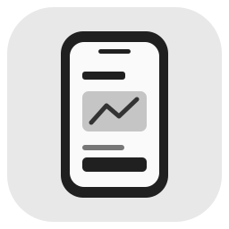
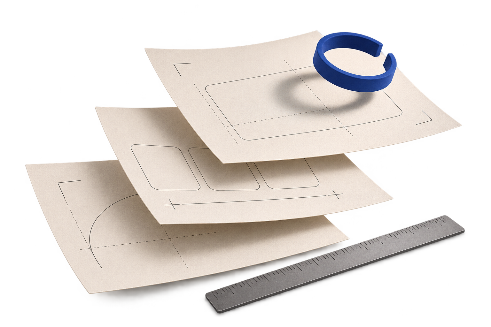
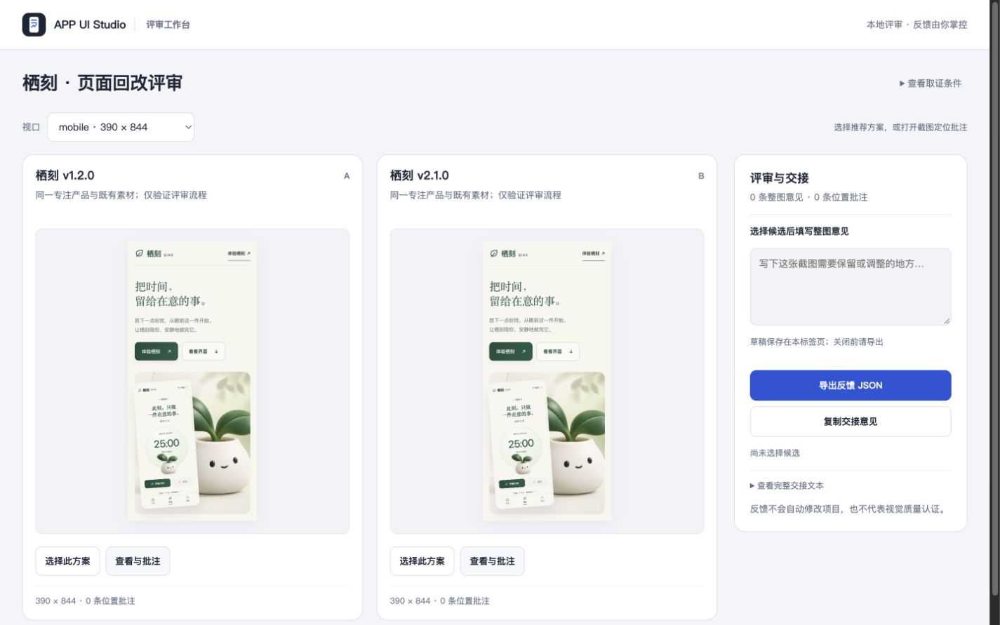
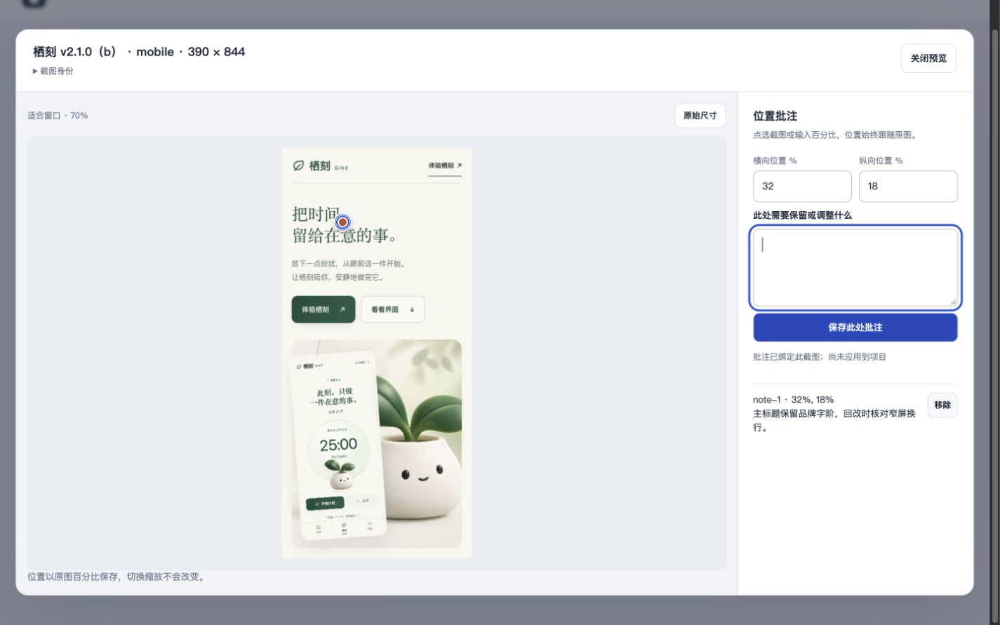

组件有状态
选中、焦点、展开和恢复各有职责。用真实尺寸与键盘操作，把一个组件磨到可以放心复用。

APP UI Studio为真实界面，走完设计的每一步
从用户任务出发，把组件、素材与动效做进真实代码。再看图、操作、回改，让每个设计决定都有落点。
APP / SaaS / 内容与宣传页 · 沿用现有技术栈与品牌

正在发生的设计

画面来自实际运行的 HTML。栖刻为仓库中的示例产品，工作台的选择、批注和导出可以直接操作。
不止一张好看的图
选中、焦点、展开和恢复各有职责。用真实尺寸与键盘操作，把一个组件磨到可以放心复用。
概念素材负责表达，真实截图负责作证。先检查身份、透明边缘和裁切，再接进实际版式。
意见属于哪一张图、哪一个位置，交接时一起带走。切换候选，也不会把旧意见绑错对象。
让过程形成闭环
锁定任务、事实和不能随意改变的部分。选择合适的页面骨架，深化一个推荐方向。
方法示意 · 不代表任务已执行
组件、素材和反馈放在同一条任务线上。先验证代表页与关键状态，再复用到其他表面。
把感受转成可观察的问题。保存截图身份与位置，修正后在相同条件下复查，保留已确认的决定。

从你眼前的任务开始
不必重做整个项目。带上现有页面、参考与约束，从需要改进的那一步开始。